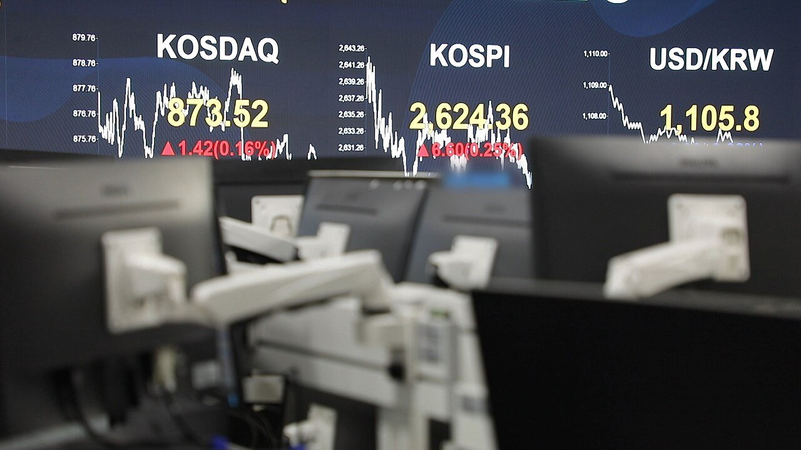
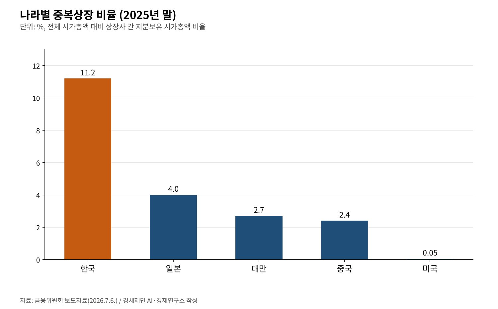
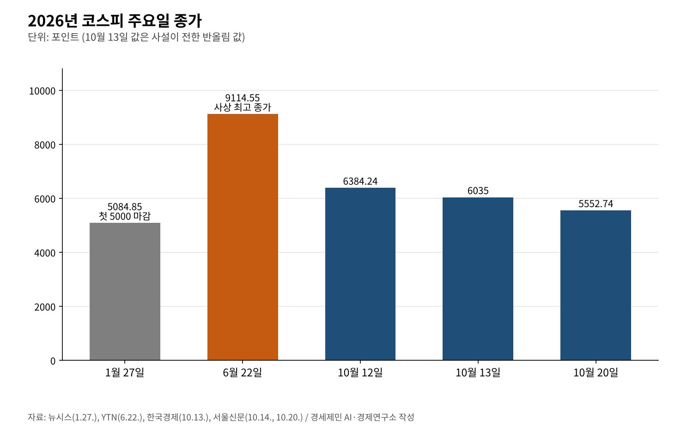

[코스피 5000의 이면①] LS에식스 상장 철회 아홉 달, 중복상장은 '원칙 금지'로 굳었다
코스피 1월 27일 첫 5000 마감, 6월 22일 9114.55 정점 뒤 10월 20일 5552.74
LS, 1월 26일 에식스솔루션즈 상장 철회… 그날 주가는 장중 52주 최고 24만6500원
3차 상법 개정으로 자사주 1년 내 소각, 8월 3일부터 물적분할 자회사 상장엔 모회사 주주 동의
AI경세제민=김갑봉 기자 | 코스피가 2026년 1월 27일 처음으로 5000선 위에서 마감했다. 종가는 5084.85였다. 다섯 달 뒤인 6월 22일에는 9114.55로 사상 최고 종가를 찍었다. 이 연재는 지수가 5000을 넘보던 1월에 시작했다.
지금 지수는 그 정점에서 멀다. 10월 20일 코스피는 3.73% 내린 5552.74로 마감했다. 정점보다 39% 낮다. 10월 13일에는 장중 6000선이 무너졌다. 지수는 5000을 한참 넘었다가 다시 5000대로 내려왔다.
지수가 오르내리는 사이에도 제도는 한 방향으로 움직였다. 계기 가운데 하나가 1월 LS의 에식스솔루션즈 상장 철회였다. 아홉 달 동안 무엇이 바뀌었는지, 주가와 제도를 나눠 짚는다. 이 글은 어떤 종목의 매매도 권하지 않는다.

상장을 접은 날, 주가는 52주 최고
LS는 1월 26일 미국 자회사 에식스솔루션즈의 유가증권시장 상장 예비심사 신청을 철회했다. 소액주주와 투자자의 우려를 경청해 주주 보호와 신뢰 회복을 위해 내린 결정이라고 밝혔다.
에식스솔루션즈는 LS가 2008년 약 1조원에 사들인 미국 전선회사 계열이다. LS의 증손회사다. LS는 상장으로 약 5000억원을 모아 미국 설비에 투자하려 했다. 모회사 주주들은 핵심 자산이 따로 상장되면 가치가 쪼개진다며 반대했다.
나흘 전인 1월 22일 이재명 대통령은 국회의원들과의 오찬에서 중복상장이 코리아 디스카운트의 원인이 된다는 취지로 말했다고 전해졌다. 회사 이름은 말하지 않았지만 시장은 LS를 떠올렸다.
LS는 철회와 함께 주주환원 계획을 냈다. 2월에 자사주 50만주를 추가 소각하고 배당을 1년 전보다 40% 넘게 올리겠다고 했다. 2030년까지 주가순자산비율을 두 배 이상 끌어올리겠다는 목표도 걸었다.
주가는 반겼다. 철회 소식이 나온 1월 26일 LS 주가는 장중 24만6500원까지 올라 52주 최고가를 새로 썼다. 시장이 자금 조달 무산보다 모회사 가치 희석을 피한 쪽을 더 크게 본 셈이다.
중복상장 비율, 한국 11.2% 미국 0.05%
중복상장은 모회사와 자회사가 함께 상장된 구조를 말한다. 금융위원회는 2025년 말 기준 한국의 중복상장 비율을 11.2%로 집계했다. 전체 시가총액 가운데 상장사끼리 지분을 가진 부분의 시가총액 비율이다.
같은 기준으로 미국은 0.05%, 일본 4.0%, 대만 2.7%, 중국 2.4%다. 한국은 일본의 약 세 배, 미국의 200배를 넘는다. 옛 원고가 쓴 18%는 IBK투자증권이 2024년에 다른 기준으로 낸 18.43%다.

금융위원회는 그간 중복상장이 일반주주 권익 침해 우려에도 관행처럼 추진돼 왔다고 진단했다. 모회사 이사회와 지배주주는 자회사 상장을 자회사 이사회 결정으로 넘기며 모회사 일반주주 보호에 따로 힘을 쏟지 않았다고 짚었다.
자사주는 1년 안에 소각, 3차 상법 개정
국회는 2월 25일 본회의에서 3차 상법 개정안을 투표 176명 가운데 찬성 175명으로 가결했다. 회사가 자기주식을 취득하면 1년 안에 이사회 결의로 소각해야 한다는 내용이 핵심이다.
예외도 있다. 주주총회 승인을 받은 보유·처분 계획에 따르면 임직원 보상, 우리사주, 신기술 도입이나 재무구조 개선 같은 경영상 목적에 쓸 수 있다. 어기면 5000만원 이하 과태료를 문다. 이미 가진 자사주에도 적용된다.
기업은 소각을 서둘렀다. CEO스코어 집계를 보면 올해 1~9월 상장사 자사주 소각액은 61조7522억원이다. 지난해 연간 24조910억원보다 156.3% 많다. 삼성전자(17조722억원)와 SK하이닉스(14조5503억원)가 절반을 넘는다.
8월 3일부터 중복상장 '원칙 금지'
금융위원회는 7월 31일 정례회의에서 한국거래소 상장·공시규정 개정안을 승인했다. 중복상장 제도개선은 8월 3일 시행됐다. 중복상장은 원칙적으로 금지하고 엄격한 요건을 갖춘 경우만 예외로 허용한다.
모회사 이사회는 다섯 가지 의무를 진다. 주주 영향 평가, 주주보호 방안 마련, 주주 소통이나 동의 확인, 이사회 찬반 결의와 통지, 단계별 공시다. 독립이사로만 꾸린 특별위원회가 이 과정을 먼저 심의한다.
물적분할로 만든 자회사를 상장하려면 모회사 주주 동의가 필수다. 3% 넘는 의결권은 3%로 묶고 참여 주식 과반과 발행주식 4분의 1 이상이 찬성해야 한다. 자회사를 나스닥 같은 해외 거래소에 올릴 때도 같은 의무가 붙는다.
규율 대상에는 손자·증손회사도 들어간다. 에식스솔루션즈 같은 해외 증손회사 상장도 이제 모회사 일반주주의 판단을 거쳐야 한다. LS가 1월에 스스로 접은 길에 8월부터는 제도의 문턱이 섰다. LS의 대안 투자 계획은 공시로 확인하지 못했다.
9114에서 5552까지, 제도는 지수를 보장하지 않는다
제도가 주주 편으로 바뀌는 동안 지수는 크게 흔들렸다. 10월 13일 코스피는 장중 5911까지 밀려 6000선을 내줬다. 7월 31일 이후 47거래일 만이었다. 그날 시가총액은 4978조원으로 두 달 반 만에 4000조원대로 내려왔다.
한국경제는 6000선 붕괴 원인으로 인공지능 가치사슬 수익성 우려와 반도체 업황 걱정, 외국인 순매도, 원화 강세 뒤 차익실현을 꼽았다. 서울신문 사설은 반도체와 소수 대형주에 쏠린 구조가 지수를 흔든다고 짚었다.
10월 20일에도 하락은 이어졌다. 기관이 1조48억원, 외국인이 약 5300억원을 순매도했고 개인이 약 8981억원을 순매수했다. 코스닥은 3.33% 내린 781.97로 800선을 내줬다.

중복상장 규율과 자사주 소각 의무는 일반주주의 몫을 지키는 장치다. 반도체 이익의 크기와 해외 자금의 방향까지 정하지는 못한다. 지수가 9114에서 5552로 내려오는 동안에도 두 장치는 그대로 남아 있다.
LS 철회에서 시작한 아홉 달은 주주 보호의 규칙을 법과 거래소 규정에 새긴 시간이었다. 규칙은 하락장에서 더 중요해진다. 지수의 높이보다 규칙이 일반주주를 끝까지 지키는지가 코스피 5000 이후의 과제다.
참고문헌
기관 자료
- 금융위원회, 「모회사 일반주주 권익을 고려하지 않는 비대칭적 중복상장은 엄격히 금지됩니다」(보도자료), 2026년 7월 6일(7월 7일 조간). KDI 경제교육·정보센터 게재. https://eiec.kdi.re.kr/policy/materialView.do?num=283869
- 금융위원회, 「중복상장 제도개선 방안이 '26.8.3일 시행됩니다」(보도참고자료), 2026년 7월 31일. KDI 경제교육·정보센터 게재. https://eiec.kdi.re.kr/policy/materialView.do?num=285008
언론 보도
- 뉴시스, "'오천피 시대 열렸다' 코스피, 종가 기준 사상 첫 5000선 돌파", 2026년 1월 27일. https://www.newsis.com/view/NISX20260127_0003492169
- 이투데이, "코스피 사상 첫 5000 돌파…G20 중 상승률 1위", 2026년 1월 27일. https://www.etoday.co.kr/news/view/2549989
- YTN, 코스피 9114.55 사상 최고 마감 속보, 2026년 6월 22일. https://www.ytn.co.kr/_cs/_ln_0102_202606221539367257_005.html
- 김동윤, "[심층분석] 코스피 6%대 급락… 6000선 붕괴된 3가지 이유", 한국경제, 2026년 10월 13일. https://www.hankyung.com/article/202610138736i
- 서울신문, "[사설] '코스피 6000' 들락날락… 반도체 호황 이후 대비하란 경고", 2026년 10월 14일. https://www.seoul.co.kr/news/editOpinion/editorial/2026/10/14/20261014027002
- 서울신문, "[마감시황]코스피 3.73% 급락 마감…기관·외국인 동반 매도에 5552.74", 2026년 10월 20일. https://www.seoul.co.kr/news/economy/securities/2026/10/20/20261020500235
- 머니투데이, "코스피, 외국인·기관 매도에 3.73% 하락…5552.74 마감", 2026년 10월 20일. https://www.mt.co.kr/stock/2026/10/20/2026102015384373141
- 뉴스핌, "LS, 에식스솔루션즈 IPO 철회…'우려 목소리 경청'", 2026년 1월 26일. https://www.newspim.com/news/view/20260126000189
- 한국경제, "李 저격에 에식스솔루션즈 상장 철회…LS, 52주 최고가", 2026년 1월 26일. https://www.hankyung.com/article/2026012620886
- 서울신문, "LS '중복상장 논란' 에식스 상장 철회… 대통령 경고에 백기", 2026년 1월 27일. https://m.seoul.co.kr/news/2026/01/27/20260127008004
- 세계일보, 대통령 중복상장 발언 보도, 2026년 1월 24일. https://www.segye.com/newsView/20260123510475
- 한국경제TV, "'자사주 의무 소각' 3차 상법 개정안, 국회 본회의 통과", 2026년 2월 25일. https://www.wowtv.co.kr/NewsCenter/News/Read?articleId=A202602250533
- 매일경제(다음 게재), "한국 증시 저평가 원인이 '이익 뻥튀기'라고?...중복상장 금지하는 이유", 2026년 5월 8일(IBK투자증권 18.43% 인용). https://v.daum.net/v/20260508180901087
- 아시아경제, "올해 상장사 자사주 소각 62조, 1년새 2.5배↑…삼성·SK하이닉스가 절반"(CEO스코어 집계), 2026년 10월 14일. https://view.asiae.co.kr/article/2026101409340182493
- 뉴스웨이, "삼성전자 17조·SK하이닉스 14조···국내 상장사 자사주 소각 '역대급', 왜", 2026년 10월 14일. https://newsway.co.kr/news/view?ud=2026101409262938682
[사진 출처]
- [사진1] KBS(bada.kbs.co.kr), "KOSPI, KOSDAQ, KRW.jpg", 위키미디어 공용, 공공누리 제1유형. https://commons.wikimedia.org/wiki/File:KOSPI,_KOSDAQ,_KRW.jpg
※ 이 기사는 AI 프로그램 클로드를 활용해 작성했습니다.
관련기사
- [코스피 5000의 이면②] 아틀라스는 2028년 공장에 들어온다, 로봇은 소비하지 않는다
- [코스피 5000의 이면③] 자사주 소각 62조원의 해, 노동자 몫은 어디에 있나
- [서평] 슘페터 『경제분석의 역사』 1권, 300년 전 질문이 오늘도 유효하다
- [서평] 『진보를 위한 주식투자』, 일하는 사람은 자본시장을 외면해도 되는가
저작권자 © AI경세제민 무단전재 및 재배포, AI학습 및 활용 금지